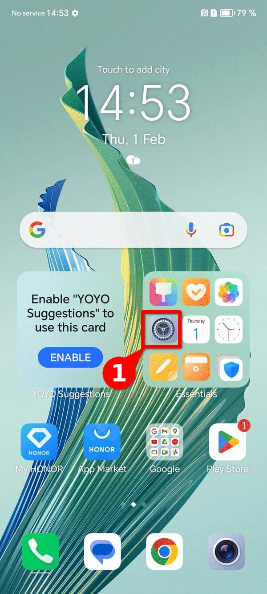
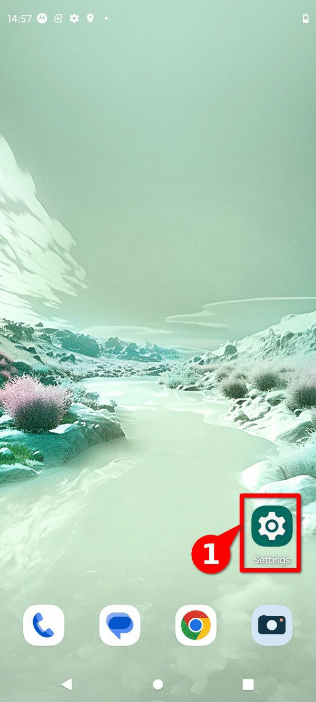
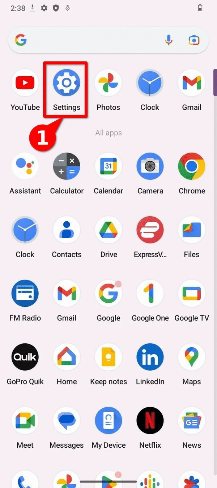
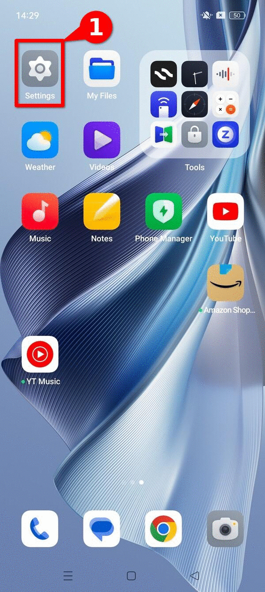
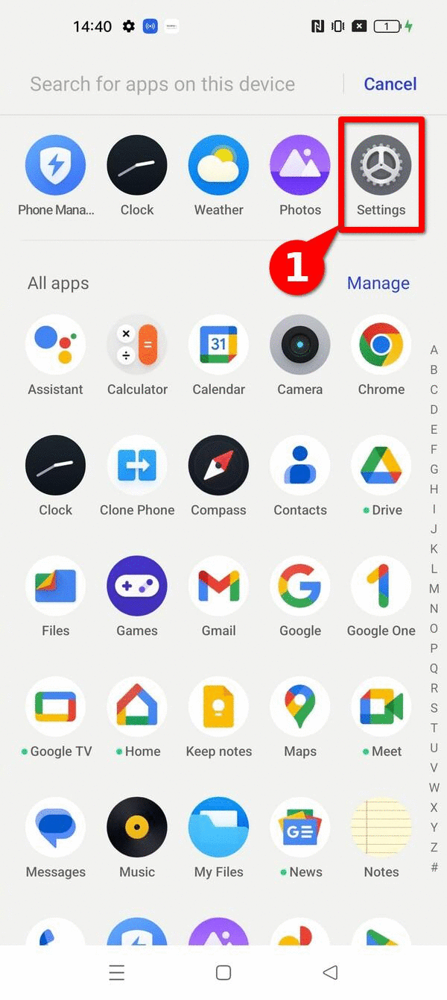
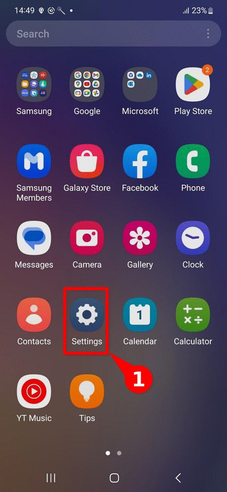
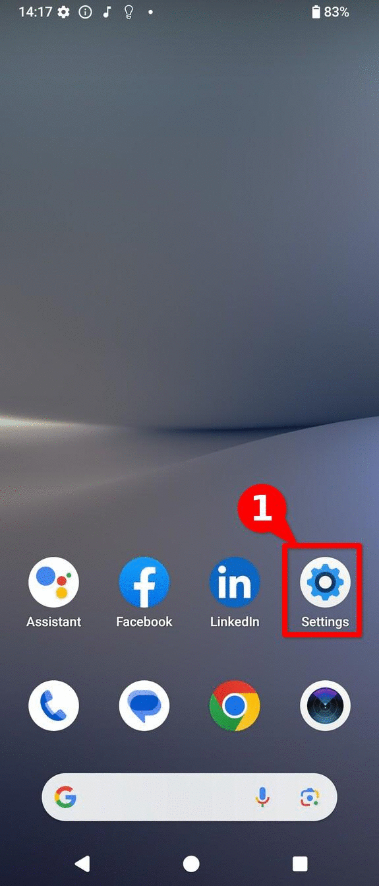
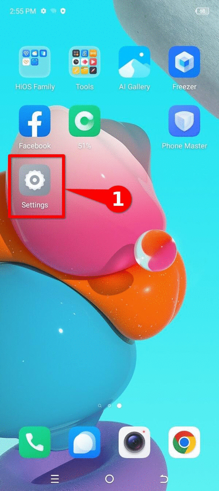

Guía: ¿Cómo extraer un reporte de errores de un dispositivo Android?
Este documento forma parte de un repositorio de documentación técnica que tiene como objetivo establecer una base de conocimientos probados, flexibles y accesibles para impulsar el análisis forense consentido en beneficio de la sociedad civil. Para organizar los contenidos, se utiliza el marco de referencia de documentación técnica Diataxis.
Este recurso en particular se enmarca dentro de la categoría de guías how-to, y muestra los pasos necesarios para generar un reporte de errores o bugreport, tanto utilizando la consola de depuración ADB como a través de la interfaz gráfica de un dispositivo. Este es un material introductorio, complementario a otros recursos, como el explainer de forense basada en logs para dispositivos Android y la guía para habilitar ADB; y forma parte de los pasos a seguir para realizar un triaje inicial.
Agradecemos la colaboración del laboratorio de seguridad de Reporteros Sin Fronteras, quienes brindaron las imágenes necesarias para la producción de esta guía.
¿Qué es un reporte de errores o bugreport?
Como su nombre lo indica, un bugrpeort o reporte de errores es un compilado de registros e información de diagnóstico que permiten identificar y corregir errores durante el desarrollo de aplicaciones. De forma nativa, el sistema operativo Android permite generar reportes de errores a través de la interfaz gráfica y a través de la consola de ADB.
En el contexto del análisis forense consentido, el bugreport es un artefacto forense útil para el triaje de dispositivos Android, incluyendo a través de la herramienta MVT. Por ejemplo, el equipo de Amnesty Tech utilizó una técnica similar para la detección del software espía NoviSpy.
¿Qué se necesita para extraer un bugreport?
A continuación se muestran los requisitos para extraer un bugreport a través de la interfaz gráfica (GUI) y de la consola ADB.
Para extraer un bugreport a través de la interfaz gráfica, únicamente se requiere el dispositivo Android a ser analizado .
Para poder generar el bugreport, es necesario activar el modo desarrollador en el dispositivo Android a ser analizado. De ser necesario, consulte la guía sobre ¿Cómo habilitar el modo de desarrollador en diferentes modelos de Android?
Para extraer un bugreport a través de la consola de ADB es necesario:
- El dispositivo Android a ser analizado: Activar el modo desarrollador y activar la depuración por USB. De ser necesario, consulta nuestras guías sobre habilitar opciones de desarrollador o la guía sobre cómo habilitar ADB
- Computadora Windows, Linux o Mac: Se utilizará para realizar la extracción.
- Tener un cable para transferencia de archivos telefono-computadora.
Pasos para generar un bugreport a través de la interfaz gráfica
En la mayor parte de los dispositivos Android es posible generar un reporte de errores sin necesidad de descargar herramientas adicionales, navegando únicamente a través de los menús del dispositivo. Este será el método de preferencia cuando se solicite a una persona defensora compartir este artefacto forense.
Generar bugreport utilizando ADB
También es posible extraer un reporte de errores desde la consola de ADB. Este procedimiento podría ser más ágil y adecuado para personas analistas que desean extraer reportes de errores de varios dispositivos.
Debido a la forma en que se desarrolla el sistema operativo Android y a las capas de personalización que agrega cada fabricante, las instrucciones exactas para generar un reporte de errores varían levemente. A continuación presentamos las instrucciones para diferentes fabricantes y versiones del sistema operativo Android.
¿Por qué cambian las instrucciones entre diferentes dispositivos?
El sistema operativo Android basa su núcleo en el proyecto de código abierto Android Open Source Project. Sin embargo, la mayoría de fabricantes utilizan una versión propietaria de Google, sobre la cuál se agregan capas de personalización adicionales, que en la mayoría de casos son también propietarias.
Honor Magic 5 Lite (Magic OS)
Para generar un reporte de errores es necesario tener acceso a las opciones de desarrollador. Si este menú aún no ha sido habilitado, puedes seguir estos pasos para habilitar las opciones de desarrollador en un dispositivo Honor.
Luego de habilitar las opciones de desarrollador, sigue estos generar un reporte de errores, mostrados en la imagen 1.
- Abre el menú de Ajustes
- Navega hasta la última opción Sistema
- Navega hasta la opción de Opciones de desarrollador
- Selecciona la opción de “Generar un reporte de errores”
- Escoge la opción de “Reporte completo”
- Da tap en “Reporte”
- Cuando esté completo, verás una notificación. Dale tap para compartir
- Se mostrará un mensaje de alerta sobre información personal. Da tap en Ok
- Selecciona el mecanismo de preferencia y comparte el bugreport

Imagen 1. Pasos para generar un reporte de errores en un dispositivo Honor Magic Lite con la versión Magic OS 7.1 en Android 13.
Motorola (Hello UI)
Para generar un reporte de errores es necesario tener acceso a las opciones de desarrollador. Si este menú aún no ha sido habilitado, puedes seguir estos pasos para habilitar las opciones de desarrollador en dispositivos Motorola.
Luego de habilitar las opciones de desarrollador, sigue estos generar un reporte de errores, mostrados en la imagen 2.
- Abre el menú de Ajustes
- Navega hasta la última opción Sistema
- Navega hasta la opción de Opciones de desarrollador
- Selecciona la opción de “Generar un reporte de errores”
- Escoge la opción de “Reporte completo”
- Da tap en “Reporte”
- Cuando esté completo, verás una notificación. Dale tap para compartir
- Se mostrará un mensaje de alerta sobre información personal. Da tap en Ok
- Selecciona el mecanismo de preferencia y comparte el bugreport

Imagen 2. Pasos para generar un reporte de errores en un dispositivo Motorola Edge Neo 40 utilizando Hello UI en Android 13.
Nokia
para generar un reporte de errores es necesario tener acceso a las opciones de desarrollador. Si este menú aún no ha sido habilitado, puedes seguir estos pasos para habilitar las opciones de desarrollador en dispositivos Nokia.
Luego de habilitar las opciones de desarrollador, sigue estos generar un reporte de errores, mostrados en la imagen 3.
- Abre el menú de Ajustes
- Navega hasta la última opción Sistema
- Navega hasta la opción de Opciones de desarrollador
- Selecciona la opción de “Generar un reporte de errores”
- Escoge la opción de “Reporte completo”
- Da tap en “Reporte”
- Cuando esté completo, verás una notificación. Dale tap para compartir
- Se mostrará un mensaje de alerta sobre información personal. Da tap en Ok
- Selecciona el mecanismo de preferencia y comparte el bugreport

Imagen 3. Pasos para generar un reporte de errores en un dispositivo Nokia G42 5G utilizando Android 13.
Oppo (Magic OS)
Para generar un reporte de errores es necesario tener acceso a las opciones de desarrollador. Si este menú aún no ha sido habilitado, puedes seguir estos pasos para habilitar las opciones de desarrollador en dispositivos Oppo.
Luego de habilitar las opciones de desarrollador, sigue estos generar un reporte de errores, mostrados en la imagen 4.
- Abre el menú de Ajustes
- Navega hasta la última opción Herramientas Adicionales
- Navega hasta la opción de Opciones de desarrollador
- Selecciona la opción de “Reporte de errores”
- Escoge la opción de “Reporte completo”
- Da tap en “Reporte”
- Cuando esté completo, verás una notificación. Dale tap para compartir
- Se mostrará un mensaje de alerta sobre información personal. Da tap en Ok
- Selecciona el mecanismo de preferencia y comparte el bugreport

Imagen 4. Pasos para generar un reporte de errores en un dispositivo OPPO Reno 10 utilizando Android 13
Realme (Realme UI)
Para generar un reporte de errores es necesario tener acceso a las opciones de desarrollador. Si este menú aún no ha sido habilitado, puedes seguir estos pasos para habilitar las opciones de desarrollador en un dispositivo Realme.
Luego de habilitar las opciones de desarrollador, sigue estos generar un reporte de errores, mostrados en la imagen 5.
- Abre el menú de Ajustes
- Navega hasta la última opción Herramientas adicionales
- Navega hasta la opción de Opciones de desarrollador
- Selecciona la opción de “Generar un reporte de errores”
- Escoge la opción de “Reporte completo”
- Da tap en “Reporte”
- Cuando esté completo, verás una notificación. Dale tap para compartir
- Se mostrará un mensaje de alerta sobre información personal. Da tap en Ok
- Selecciona el mecanismo de preferencia y comparte el bugreport

Imagen 5. Pasos para generar un reporte de errores en un dispositivo Realme GT2 Pro con RealMe UI 4.0 utilizando Android 13
Samsung (One UI)
Para generar un reporte de errores es necesario tener acceso a las opciones de desarrollador. Si este menú aún no ha sido habilitado, puedes seguir estos pasos para habilitar las opciones de desarrollador en un dispositivo Samsung.
Luego de habilitar las opciones de desarrollador, sigue estos generar un reporte de errores, mostrados en la imagen 6.
- Abre el menú de Ajustes
- Navega hasta la opción de Opciones de desarrollador
- Selecciona la opción de “Generar un reporte de errores”
- Escoge la opción de “Reporte completo”
- Da tap en “Reporte”
- Cuando esté completo, verás una notificación. Dale tap para compartir
- Se mostrará un mensaje de alerta sobre información personal. Da tap en Ok
- Selecciona el mecanismo de preferencia y comparte el bugreport

Imagen 6. Pasos para generar un reporte de errores en un dispositivo Samsung Galaxy A54 con One UI en un dispositivo utilizando Android 13
Sony (Xperia UI)
Para generar un reporte de errores es necesario tener acceso a las opciones de desarrollador. Si este menú aún no ha sido habilitado, puedes seguir estos pasos para habilitar las opciones de desarrollador en dispositivos Sony.
Luego de habilitar las opciones de desarrollador, sigue estos generar un reporte de errores, mostrados en la imagen 7.
- Abre el menú de Ajustes
- Navega hasta la última opción Sistema
- Navega hasta la opción de Opciones de desarrollador
- Selecciona la opción de “Generar un reporte de errores”
- Escoge la opción de “Reporte completo”
- Da tap en “Reporte”
- Cuando esté completo, verás una notificación. Dale tap para compartir
- Se mostrará un mensaje de alerta sobre información personal. Da tap en Ok
- Selecciona el mecanismo de preferencia y comparte el bugreport

Imagen 7. Pasos para generar un reporte de errores en un dispositivo Sony Xperia 10V con Xperia UI 4.0 utilizando Android 14.
Tecno (Hi OS)
Para generar un reporte de errores es necesario tener acceso a las opciones de desarrollador. Si este menú aún no ha sido habilitado, puedes seguir estos pasos para habilitar las opciones de desarrollador en dispositivos Tecno. .
Luego de habilitar las opciones de desarrollador, sigue estos generar un reporte de errores, mostrados en la imagen 8.
- Abre el menú de Ajustes
- Navega hasta la última opción Sistema
- Navega hasta la opción de Opciones de desarrollador
- Selecciona la opción de “Generar un reporte de errores”
- Escoge la opción de “Reporte completo”
- Da tap en “Reporte”
- Cuando esté completo, verás una notificación. Dale tap para compartir
- Se mostrará un mensaje de alerta sobre información personal. Da tap en Ok
- Selecciona el mecanismo de preferencia y comparte el bugreport

Imagen 8. Pasos para generar un reporte de errores en un dispositivo Tecno Spark Go con Hi OS utilizando Android 13.
Xiaomi (Hyper OS)
Para generar un reporte de errores es necesario tener acceso a las opciones de desarrollador. Si este menú aún no ha sido habilitado, puedes seguir estos pasos para habilitar las opciones de desarrollador en un dispositivo Xiaomi.
Luego de habilitar las opciones de desarrollador, sigue estos generar un reporte de errores, mostrados en la imagen 9.
- Abre el menú de Ajustes
- Navega hasta la última opción Sobre el dispositivo
- Navega hasta la opción de Información detallada del dispositivo
- Ubica la información correspondiente al CPU y da tap 5 veces
- Verás una notificación de alerta sobre información personal. Dale click en Estoy de acuerdo
- Cuando esté completo, verás una notificación. Dale tap para ir a la carpeta de archivos
- Ubica el reporte de errores recién generado y dale clic para compartir.
- Selecciona el mecanismo de preferencia y comparte el bugreport

imagen 9. Pasos para generar un reporte de errores en un dispositivo Xiaomi 13T.
Pasos para generar un bugreport a través de la consola ADB
Además del método para generar un reporte de errores a través de la interfaz gráfica, es posible generar un reporte de errores a través de la consola ADB siguiendo estos pasos. Es importante recordar que antes de seguir estas instrucciones, debes habilitar la depuración por USB.
Generar el reporte de errores
Si tienes solo un dispositivo conectado, puedes obtener un informe de errores con adb, de la siguiente manera:
$ adb bugreport
Si no especificas una ruta de acceso para el informe de errores, se guardará en el directorio local. Si deseas incluir una ruta específica, la puedes agregar como parámetro de la siguiente forma:
$ adb bugreport E:\Reports\MyBugReportsPath
Múltiples dispositivos
Si tienes varios dispositivos conectados, debes especificar el dispositivo con la opción -s. Ejecuta el comando adb devices para obtener el número de serie del dispositivo y generar el informe de errores:
$ adb devices
List of devices attached
emulator-5554 device
8XV7N15C31003476 device
$ adb -s 8XV7N15C31003476 bugreport
Extraer el reporte de errores
Una vez que se envía la señal al dispositivo para generar el reporte de errores, es posible extraerlo directamente a la computadora desde donde se está ejecutando ADB.
Primero, debemos identificar el reporte de errores a extraer. Se puede utilizar el comando adb shell ls /bugreports/ para ver los reportes almacenados, que por defecto estarán en la carpeta /bugreports/.
$ adb shell ls /bugreports/
bugreport-foo-bar.xxx.YYYY-MM-DD-HH-MM-SS-dumpstate_log-yyy.txt
bugreport-foo-bar.xxx.YYYY-MM-DD-HH-MM-SS.zip
dumpstate-stats.txt
Una vez que se identifica el reporte de errores a extraer, se puede copiar a la computadora a través del siguiente comando:
$ adb pull /bugreports/bugreport-foo-bar.xxx.YYYY-MM-DD-HH-MM-SS.zip
Una vez se ejecute este comando, el archivo se copiará al directorio desde donde se esté ejecutando ADB.
Conclusión
Un bugreport hace referencia a un reporte de errores generado por el sistema operativo Android, y que incluye información útil, ideada especialmente para la depuración de errores durante el desarrollo de aplicaciones. Sin embargo, muchos de los registros y comportamientos que se incluyen dentro del bugreport son de utilidad para el análisis forense. Extraer el reporte de errores, es uno de los primeros pasos en el ciclo de una investigación, y es una forma frecuente de iniciar un proceso de triaje en dispositivos Android.
Debido a la diversidad de fabricantes y versiones del sistema operativo Android hemos presentado en este material una lista de fabricantes e instrucciones paso a paso para generar un bugreport, y así facilitar y promover el análisis forense consentido en beneficio de la sociedad civil. Recuerdo siempre discutir y obtener un consentimiento informado antes de extraer información forense.
Si tienes acceso a una interfaz gráfica que no se muestra en la lista, y deseas incorporar la captura correspondiente a este recurso, puedes escribirnos a través de un issue o, si te sientes cómodo con markdown, puedes enviar una solicitud de integración a través de un pull request.
Comentarios
¿Tienes comentarios o sugerencias sobre este recurso? Puedes utilizar la función de comentar que se muestra a continuación para dejarnos tus ideas o apreciaciones. Por favor asegúrate de seguir nuestro código de conducta. La función de comentarios enlaza directamente a la sección de Discussions de Github, donde también puedes participar en las discusiones de forma directa, si lo prefieres.